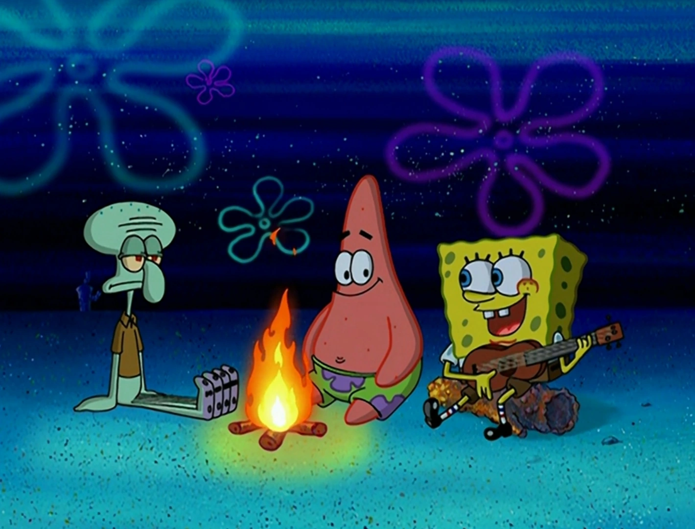
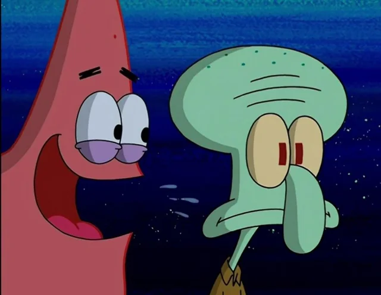
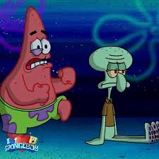
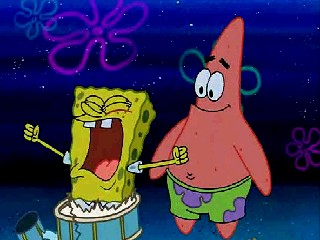

(SpongeBob):
I call this one the Campfire Song song
(SpongeBob):
Let's gather around the campfire
And sing our campfire song
Our C-A-M-P-F-I-R-E S-O-N-G song
And if you don't think that we can sing it faster, then you're wrong
But it'll help if you just sing along
(Patrick):
(Bum-BUM-BUM)
(SpongeBob):
C-A-M-P-F-I-R-E S-O-N-G song
C-A-M-P-F-I-R-E S-O-N-G song
And if you don't think that we can sing it faster, then you're wrong
But it'll help if you just sing along
C-A-M-P-F-I-R-E S-O-N-G song
Patrick!
(Patrick):
Song! C-A-M-P-F-I-R-E
(SpongeBob):
Squidward!
(Squidward):
...
(SpongeBob):
Good!
(SpongeBob):
It'll help
It'll help
If you just sing along!
Oh, yeah!
